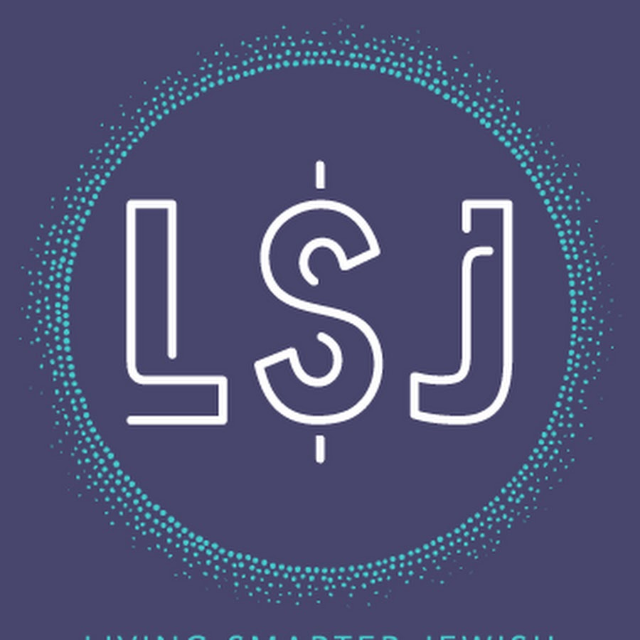
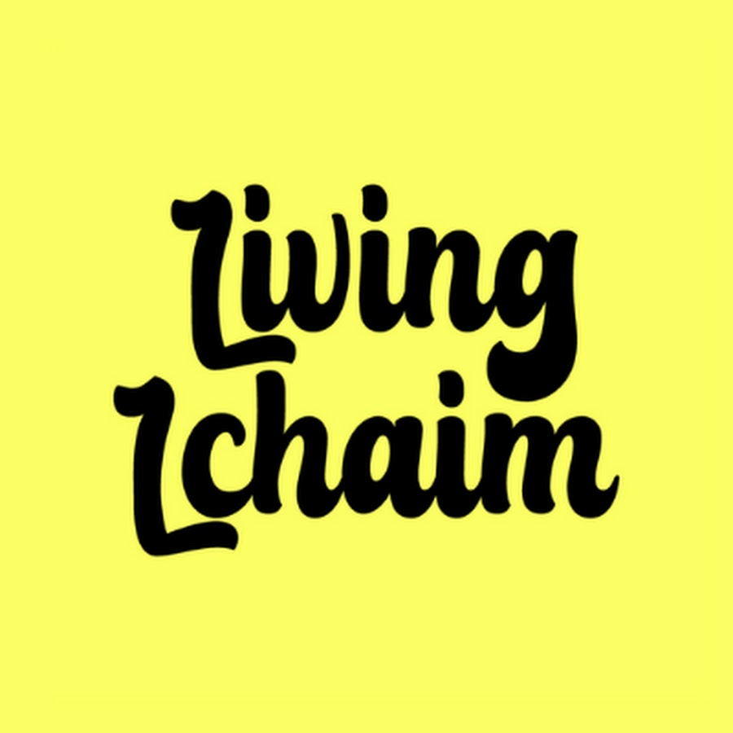
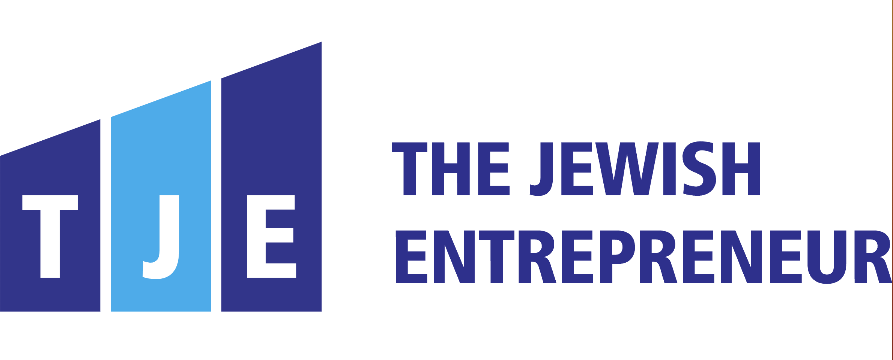
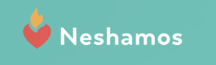

Our partners & featured in




Founded 2023 · 501(c)(3) non-profit organization
In the Jewish community, the deepest financial struggles are the ones nobody talks about. The debt that grows in private. The gambling nobody knows about. The community leader who can’t admit they’re underwater. What’s missing is a place for the ones who are in the messy middle.
Each program is uniquely designed for different needs and experiences.
If you're a Jewish family or individual carrying a hard chapter — debt, divorce, a job change, a quieter struggle no one knows about — there's a good chance we can walk it with you. Here's some of what that looks like:
Our partners & featured in




Our mission is to help all Jewish people get back on their feet, toward emotional and financial stability. A hand-up, not a handout.
Our story →We don't drop a check and disappear. Each family is met by a case manager who walks the road from intake to stability — for as long as it takes.
Submit an application. We review for fit, with respect and dignity.
A confidential conversation about where you are and where you want to be.
Together we design a roadmap rooted in your circumstances, not a template.
We pair you with coaches, counselors, and partner organizations.
Ongoing accompaniment — check-ins, accountability, course corrections.
You graduate when stability is yours to keep.
Every dollar funds case management, coaching, and the long quiet work of helping a family stand on its own. Designate to a specific program, or trust us to put it where it's needed most.
Donate today →